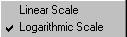
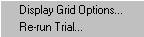

This topic describes the Optimization Results interface, which displays the progress of the optimization process both graphically and as tabular data.
Optimization results are automatically displayed after optimization starts and performs any preliminary calculations to initialize optimization, including initialization of the simplex (for the Downhill Simplex and Simulated Annealing methods) or bracketing of a local minimum (for Brent's method). After initialization, ASAP displays each successive iteration in the Optimization Results window.
In the above example, the title, "Optimized_Ellipsoid" is the Optimization Session title, which you entered on the Optimization Method tab of the Optimization Setup Summary Grid.
For the graphed values of the Figure of Merit (FOM), the graph is automatically scaled with each successive Trial Solution. The table is also updated with each Trial Solution, including the Figure Of Merit (FOM), the values of the Design Variables (X1 and X2 in this example), any Objective Constraints (none in this example) and the Design Objectives (just results in this simple example).
The F column name in this example is based on user-definition of the design objective.
Right-click the graph to display the scaling context menu,  for switching between linear and semi-logarithmic plotting. In the example below, the graph is a semi-logarithmic plot.
The Figure Of Merit (FOM) does not monotonically decrease. (This can also be seen in the linear plot, but the semi-logarithmic plot reveals more detail.)
Right-click the spreadsheet to display the context menu, . Select Display Grid Options to open the Grid Display Options dialog, or select Re-run Trial to repeat a selected trial in the table. Use the Display Grid Options dialog to designate a subset of trial solutions to display, or to disable displaying the table.
Unlike some optimization software, ASAP shows each trial solution, regardless of whether it turned out to be a "good" step or a "bad" step. ASAP displays all the trial solutions, because every Trial Solution potentially reveals something important about the characteristics of the design space. This is particularly true in applications with multiple design variables. ASAP presents and preserves this information for your consideration.
Results can be transferred to a spreadsheet application for your reporting purposes.